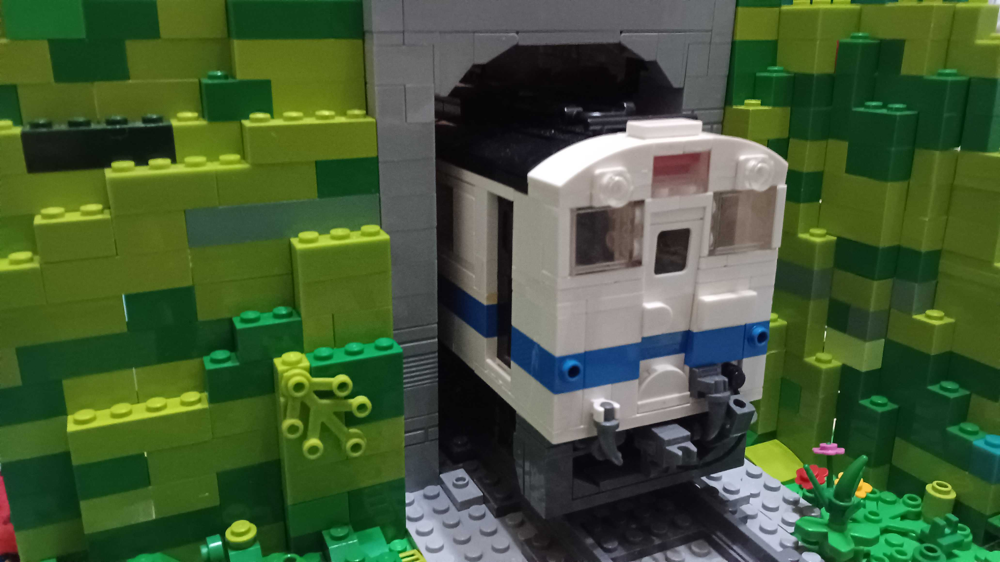
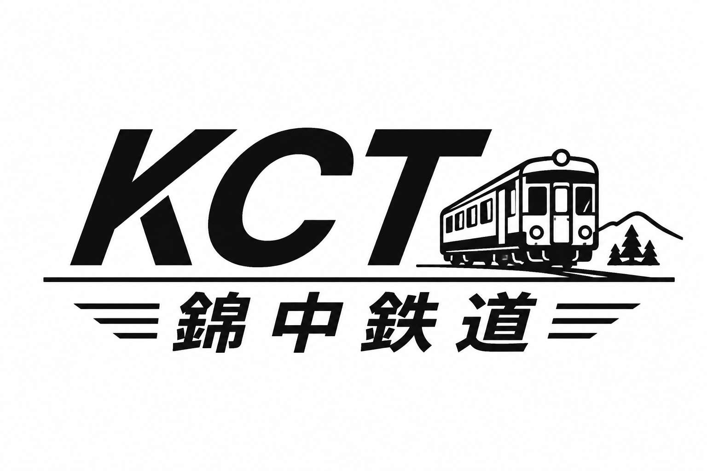
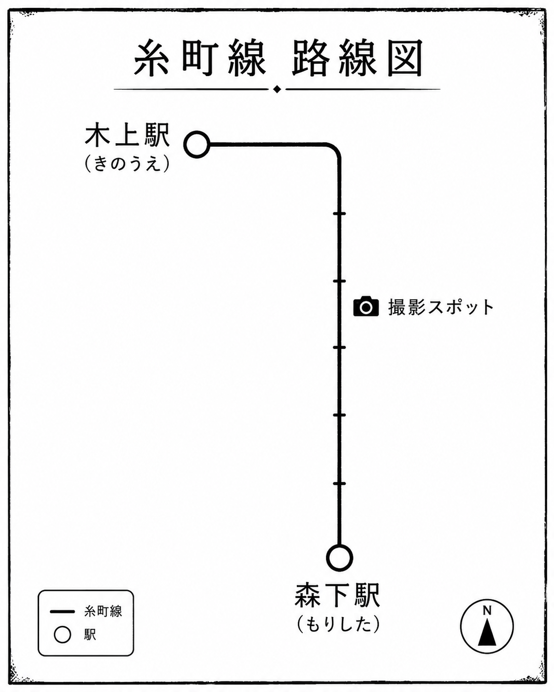
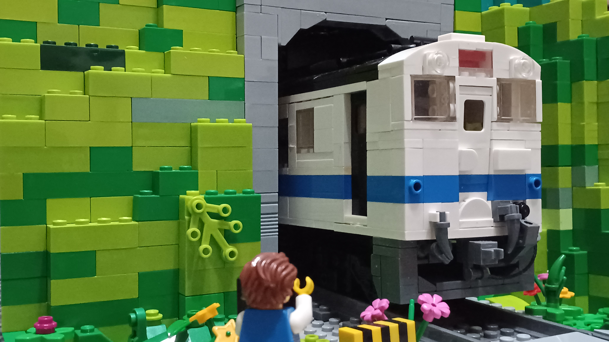

錦中鉄道架空会社


信号確認中...

【木造駅舎の魅力】錦中駅の待合室に、地元の方が生けてくださった季節の花が飾られています。 古い木の香りと共に、どうぞお楽しみください。
本日より「錦中鉄道 復刻デザイン切符」を限定販売いたします。 国鉄時代の硬券を再現したこだわりの1枚です！
錦中鉄道（KCT）は、地域の暮らしを支えるローカル鉄道会社です。 山あいの町と海辺の集落を結び、通学・通勤輸送を中心に観光輸送も行っています。 本社では車両の整備や運行管理を行っており、小規模ながらも地域に密着した運営を続けています。 沿線には無人駅や設立当初から変わらない駅舎が点在し、どこか懐かしい風景が広がります。 主力車両には、国鉄型気動車を改造した一般車両や、入れ換えディーゼル機関車などが在籍しています。 単行運転から2両編成運転まで柔軟に対応し、朝夕は通学列車、休日は観光列車として活躍しています。 「地域とともに走る鉄道」をコンセプトに、今日も錦中鉄道はゆっくりと沿線を走り続けています。
本日より「錦中鉄道 復刻デザイン切符」を限定販売いたします。 国鉄時代の硬券を再現したこだわりの1枚です！

※路線図をクリックすると駅情報が表示されます

キハ26-919は、老朽化により引退した国鉄型気動車「キハ20」を譲り受け、糸町線向けに改造した気動車です。 単行運転を中心に活躍し、国鉄一般色を意識した塗装が特徴です。

キハ43-251は、引退したキハ40を改造した主力車両です。 地域輸送を支える中心的存在として運行されています。

DB10-3は入れ換え作業や保線用途に使用されるディーゼル機関車です。 車両基地での作業を中心に活躍しています。
| 木上駅 発 | 森下駅 着 | ※一部列車が変更、運休となる場合があります。
|---|